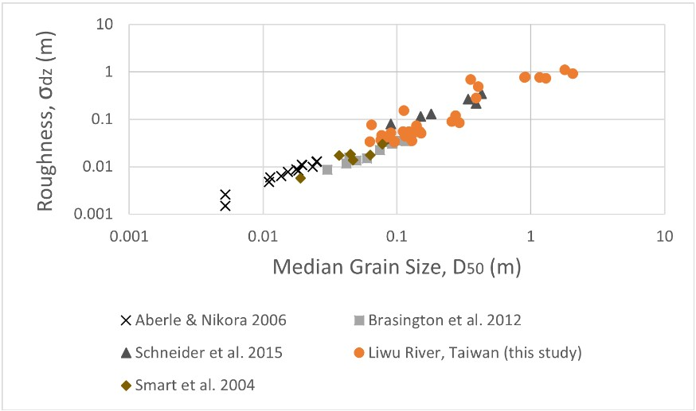
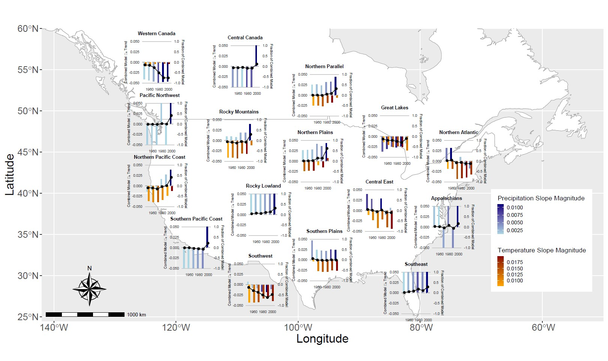
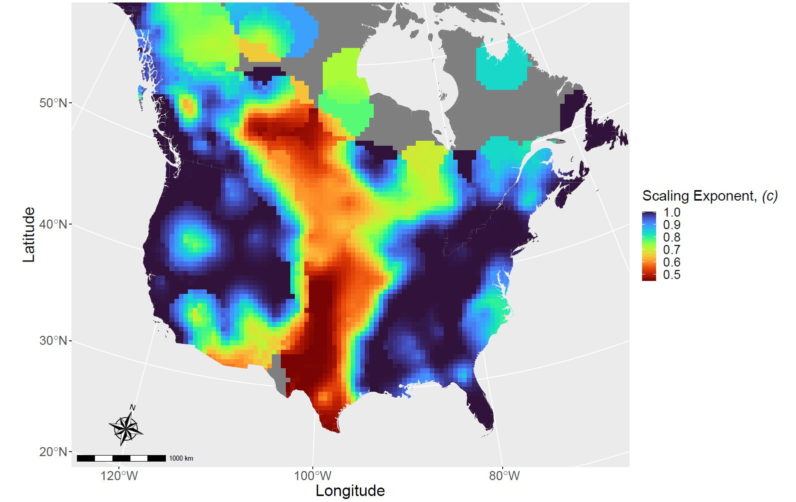

Research
GitHub
link.
Google Scholar
link.
Overview
My research is primarily within the field of Geomorphology and focused on
fluvial systems. Most of my research is related to the dynamic ineractions
between river channel form and process.
I am also interested in fluid mechanics and am fascinated by the
Buckingham-Pi Theorem
Undergraduate Research
As an undergraduate, I worked with Julia Carr and Roman DiBiase examining
coarse, bedrock rivers in Taiwan. I measured grain size and channel bed
roughness using data generated through drone surveys. I also was able to
join Al Neely on a trip to Yucaipa Ridge in Caliifornia to survey the
hillslopes after the 2020 El Dorado fire.

Compiled grain size and roughness measurements
supplemented with results from Taiwan. Roughness is quantified as the
standard deviation of the detrended channel bed elevation.
Graduate Research
Runoff Efficiency
My Ph.D. research began by investigating climatic controls on runoff
efficiency, the fraction of precipitation that exits a catchment as surface
flow.

Runoff efficiency temporal trend slope magnitudes from a linear model using precipitation and temperature as inputs at different reference periods. Model runoff efficiency is on the left y-axis (black). Colored bars represent the fraction of the model slope due to the precipitation only model (blue) and the temperature only model (red) plotted as bars. The direction of the bars indicates the sign of the slopes. The absolute value of each bar pair sums to one on the right y-axis. Where the is no bar, the variable is insignificant. The color represents the slope magnitude of the partial models.
Disharge - Drainage Area Scaling
Complenting the runoff efficiecny workk, I also looked at how runoff efficiency influences the scaling of the
classic discharge - drainage area relationship and the size of channels in
regions where that relationship is non-linear. This relationship is often assumed to be linear as a simplification for landescape evolution models and where actual measurments are limited. We found this assumption is true in most locations within North America. The places where the assumption is not as valid tend to have low runoff efficiency and may have channels shaped by more infrequent discharges.

Kriged scaling parameter values using the mean annual discharge.
Gray areas do not have interpolated values.
Sediment Transport
I have additionally been working on a sediment transport question where I am testing experimental ideas related to sand pulses. Adding sand to coarser grains may reduce the stress required to mobilze those coarse grains. Pulses of sand caused by flow regulation, therefore, have the potential to aid in coarse grain transport, but the pulses could also lead to burial or be insufficient for motion to occur. This possibility is particularly relevant for streams downstream of dams, where grain coarsening and a lack of bed mobility have ecological consequences.
 An orthomosaic of the Ompompanoosuc River. This reach oscillates between being cobbled dominated to being paved in sand.
An orthomosaic of the Ompompanoosuc River. This reach oscillates between being cobbled dominated to being paved in sand.
River Meandering
River meandering is a rather contested topic. The mechanics behind it have been fairly well quantified, but the explanation for why these mechanics operate is less well understood. Although, there are some who argue it is the other way around. The reason why rivers meander may be due to energy minimization, energy maximization, or purely because of instabilities.
Permafrost Rivers
Recently, I have been joined efforts to understand rivers in Permafrost landscapes. Evan Dethier and Jordan Fields have been leading the way on the fate of
sediments and river meanding in the arctic under a warming climate
Publications
- Erikson, C. M., Renshaw, C. E., & Magilligan, F. J. (2024). Spatial variation in drainage area — Runoff relationships and implications for bankfull geometry scaling. Geomorphology, 446, 108998. https://doi.org/10.1016/j.geomorph.2023.108998